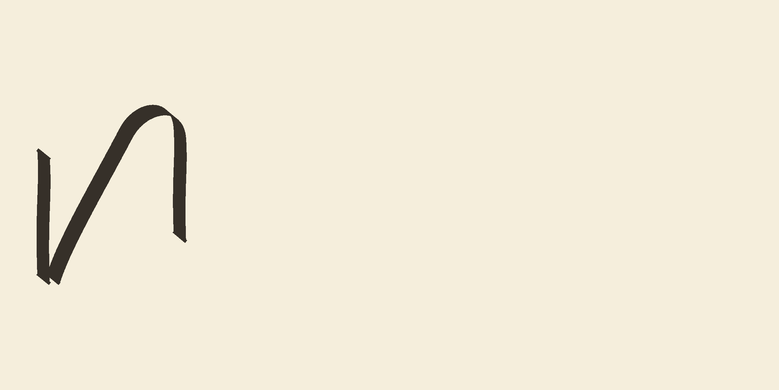
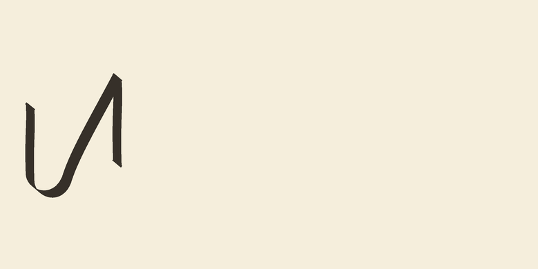
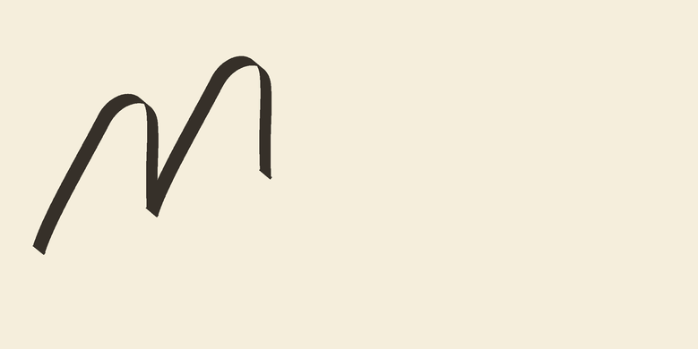
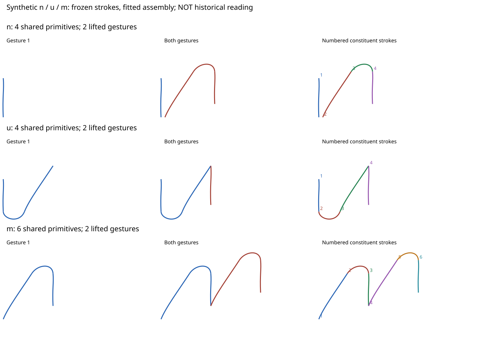
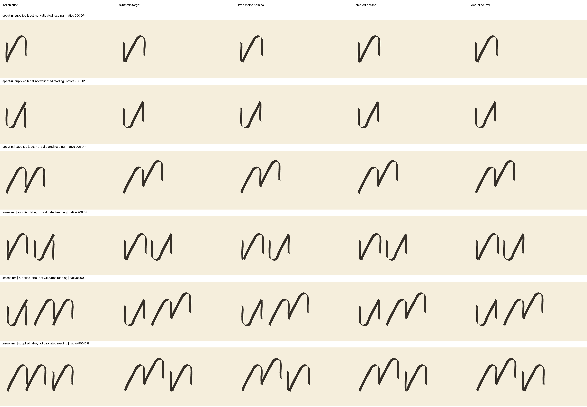
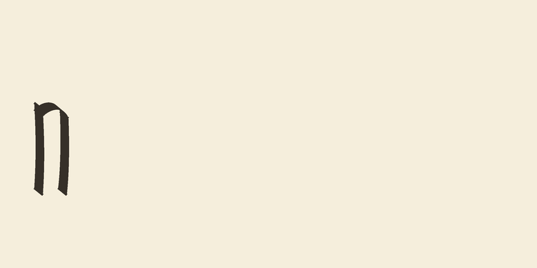
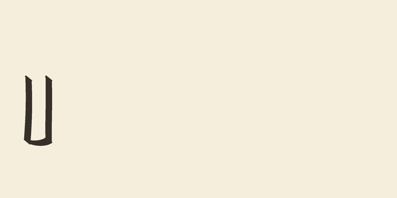
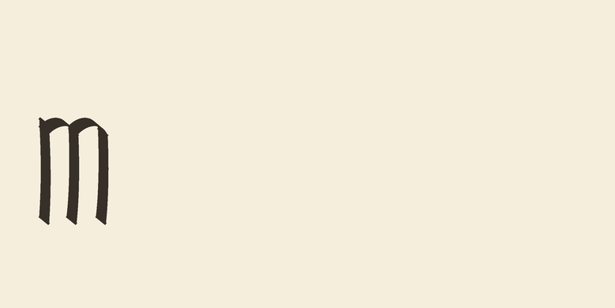

Latest: owner requests appearance repair. Open the guided n/u/m review sheet and recorded feedback. Mechanical checks pass in the declared scope, but all three constructions need substantially less slant and nearly upright upward movement close to stems.
Newer samples: CURRICULUM-014 level assembly removes the climbing arches and uses independently admitted standalone stems. Open the new before/after workbook. The page below records the older experiment; no S2 or context approval is implied.
CURRICULUM-005: bounded synthetic n, u, m recipes. Every stroke is frozen; only the second gesture's placement is fitted.
Not an accepted alphabet. These are supplied construction hypotheses, not validated historical readings. The shapes retain slanted rises and unequal heights; fitting their synthetic targets does not settle letterform quality. The standalone stem in n/u still lacks matching independent admission. S2, real-hand and context-training approval remain false.
Protocol and results · Frozen specification · Machine-readable experiment report · Earlier stroke work
Seed 7, transformed repeat observations. Equal physical scale, original 900-DPI panels; select an image to inspect its native pixels. These are actual controller trajectories, not just ideal centerlines.



Left: first gesture. Middle: both gestures. Right: numbered primitive contributions. This vector diagram shows path structure, not ink appearance. The checkpoint references the same shared stem inside all three letters.

Selected recipe listing and frozen lower layers · Shared-primitive propagation proof · Training/development selection record
Top three rows are repeat observations of isolated letters; bottom three are unseen exact pairs. They are transfer probes, not learned words or joining rules.

Full workbooks: seed 7 · seed 19 · seed 41.
The older catalog uses independent per-character curves. These panels use the same fixed nib, frame and layout for comparison only; they are not candidates for shared-stroke acceptance and have no actual-controller proof in this experiment.



Review baseline/x-height compatibility and the visible letter hypotheses, then resolve the standalone-stem prerequisite before independent S2 evaluation. Do not advance to context deformation, words, fatigue or expressive ink on a synthetic target score alone.